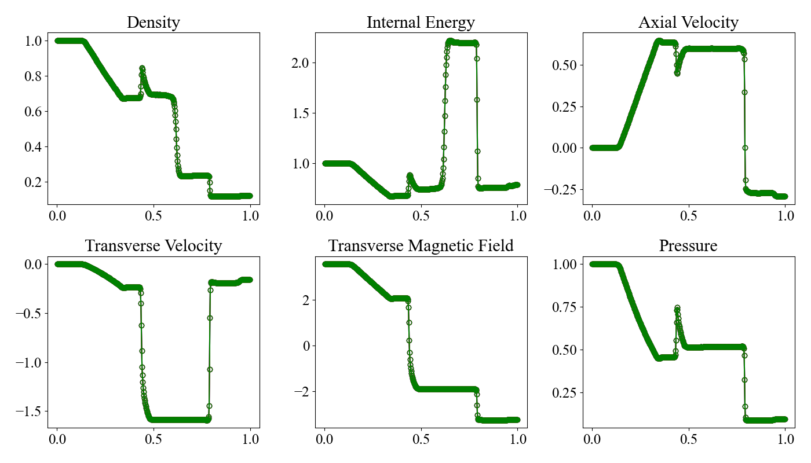

1D MHD Test: Magnetized Sod's Shock Tube
1次元の磁気流体力学的衝撃波管問題 [Brio and Wu, 1988] です。この問題は、磁気流体の方程式を解く数値スキームの検証によく用いられます。
MISOで提供しているテスト問題では、\(x\), \(y\), \(z\)の各方向に1次元問題を実施していますが、本ページでは\(x\)方向の問題のみを説明します。
Location
demo/mhd1d_shock_tube/
Geometry
\(0 \leq x \leq 1\).
Initial Conditions
初期条件は、 \(x=0.5\) で分離された左側と右側の状態と\(B_x=0.75\sqrt{4\pi}\)の軸方向の磁場で記述されます。比熱比は\(\gamma = 2\)とします。
\[\begin{split}
\begin{align*}
\begin{pmatrix}
\rho_\mathrm{L} \\
p_\mathrm{L} \\
v_\mathrm{L} \\
B_\mathrm{L}
\end{pmatrix}
&=
\begin{pmatrix}
1.0 \\
1.0 \\
0.0 \\
-\sqrt{4\pi}
\end{pmatrix} \\
\begin{pmatrix}
\rho_\mathrm{R} \\
p_\mathrm{R} \\
v_\mathrm{R} \\
B_\mathrm{R}
\end{pmatrix}
&=
\begin{pmatrix}
0.125 \\
0.1 \\
0.0 \\
\sqrt{4\pi}
\end{pmatrix} \\
\end{align*}
\end{split}\]
ここで、\(B_\mathrm{L}\)と\(B_\mathrm{R}\)は横方向の磁場（\(y\)方向）です。
Boundary Conditions
すべての物理量について、対称境界条件を設定します。
Results
Pythonを用いて可視化し、\(x\), \(y\), \(z\)方向の結果を比較できます。 画像ファイルは demo/mhd1d_shock_tube/figsに保存されます。
cd demo/mhd1d_shock_tube
python plot_data.py
